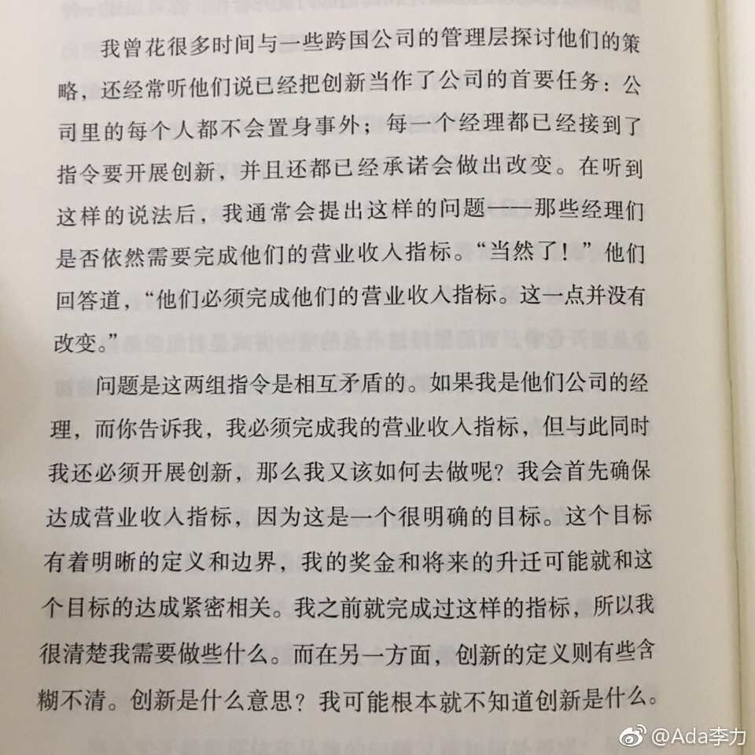

#读书#当人有两个目标时，是很难做到兼顾的。
比如书中提到的：既要管理层完成营收目标，又要实现创新。这个对大多数管理层来说，基本做不到。
我在之前公司的运营部门也面临这样的问题：既要服务好给钱的B端，又要服务好需要免费的C端用户。当时的CEO认为可以兼顾，而我心里面一直觉得这种工作难度太高，超强能力的人能做到兼顾，但企业最大的困难不就在于难以找到足够多超强能力的人么。
更小的例子是工作制度，如果是以工作结果为评价标准，就不能同时用工作时间来考核。我遗憾的是，自己并没有在这个小事情上坚持自己的做法。人事同事认为目前的员工只适合用工作时间来监督和管理。以工作结果为考核，不但对员工素质要求高，对管理层的要求更高。
还有我在尝试OKR制定今年健身目标时，定了两个数据：体脂率和体重。但我也知道，这两个数据会有冲突，并不一致。所以定执行计划时，先保证首要目标，降低体脂率，而降低体重只能是个辅助目标。
以后少用些“既要…又要”的句式，只要承认这个前提 - 我们绝大部份人都不是超人。
比如书中提到的：既要管理层完成营收目标，又要实现创新。这个对大多数管理层来说，基本做不到。
我在之前公司的运营部门也面临这样的问题：既要服务好给钱的B端，又要服务好需要免费的C端用户。当时的CEO认为可以兼顾，而我心里面一直觉得这种工作难度太高，超强能力的人能做到兼顾，但企业最大的困难不就在于难以找到足够多超强能力的人么。
更小的例子是工作制度，如果是以工作结果为评价标准，就不能同时用工作时间来考核。我遗憾的是，自己并没有在这个小事情上坚持自己的做法。人事同事认为目前的员工只适合用工作时间来监督和管理。以工作结果为考核，不但对员工素质要求高，对管理层的要求更高。
还有我在尝试OKR制定今年健身目标时，定了两个数据：体脂率和体重。但我也知道，这两个数据会有冲突，并不一致。所以定执行计划时，先保证首要目标，降低体脂率，而降低体重只能是个辅助目标。
以后少用些“既要…又要”的句式，只要承认这个前提 - 我们绝大部份人都不是超人。
- 